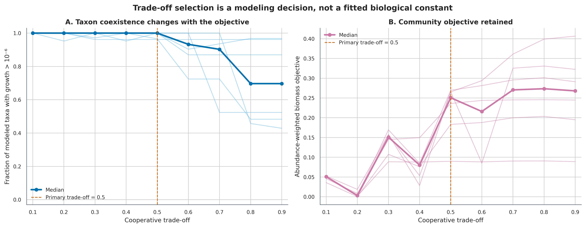
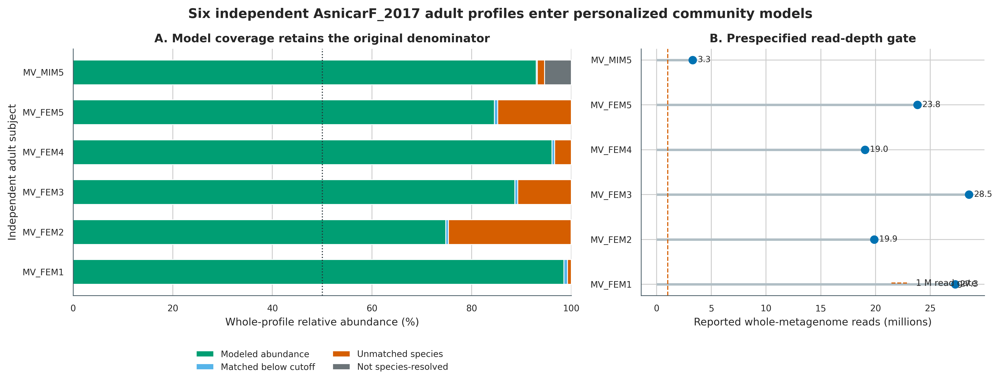
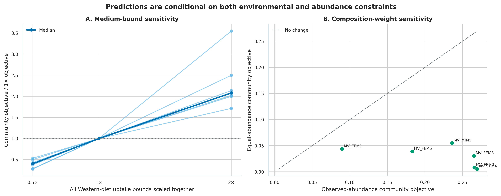
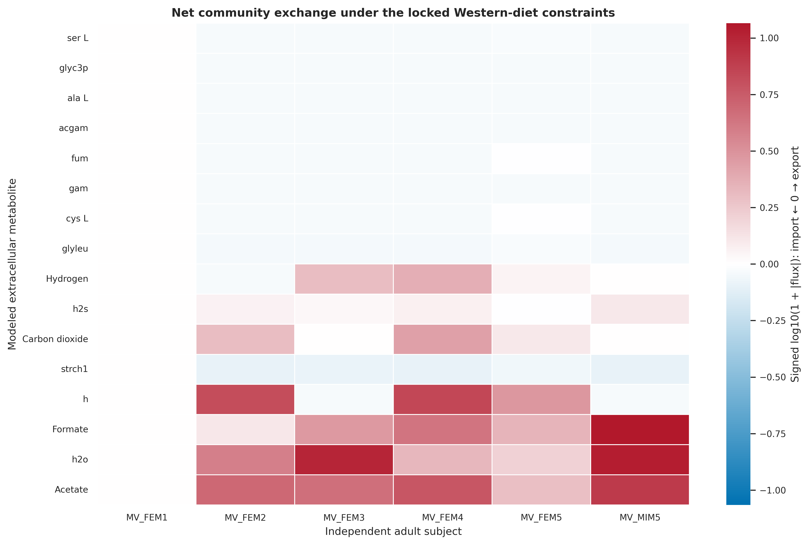
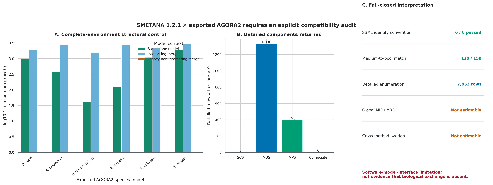
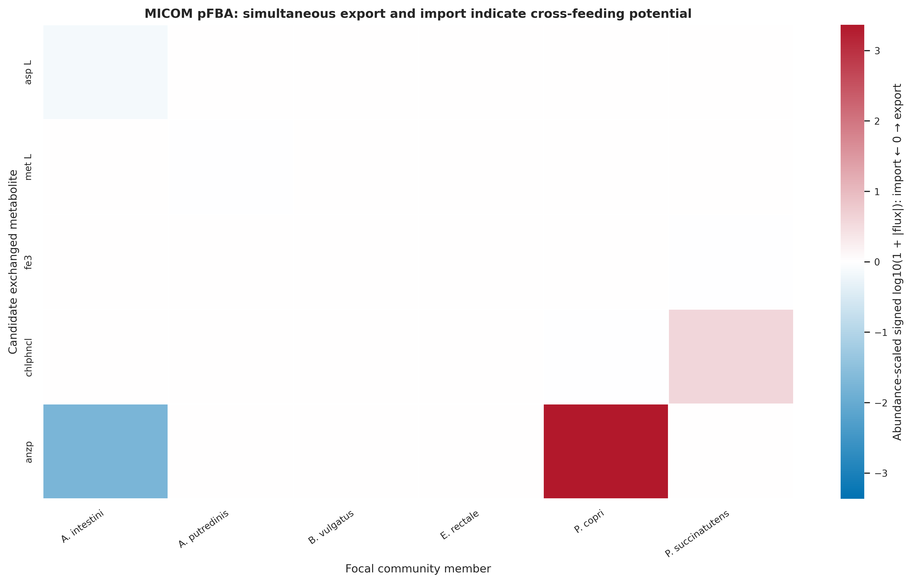

options(timeout = 600)
base_url <- "https://raw.githubusercontent.com/petemeng/metagenomics-best-practices/e219a2cd01609cc208a89e291cbd363ed7f2fbd8/"
files <- read.delim(paste0(base_url, "examples/61/files.tsv"))
for (i in seq_len(nrow(files))) {
path <- files$path[i]
dir.create(dirname(path), recursive = TRUE, showWarnings = FALSE)
if (!file.exists(path)) {
download.file(paste0(base_url, files$source[i]), path, mode = "wb")
}
}群落代谢与流量：MICOM / SMETANA
先给结论：MICOM 能把“样本里有哪些物种”推进到“在指定代谢网络、培养基、丰度权重和优化目标下，哪些物种可能生长、哪些胞外代谢物可能被消费或输出”。SMETANA 可以补充营养依赖假设，但必须先通过模型标识、培养基映射和合并模型生长审计。本次 SMETANA 1.2.1 对导出的 AGORA2 SBML 返回 7,853 条 detailed component rows，却无法估计 global MIP/MRO；这个结果属于 software/model-interface limitation，不是“没有生物学交换”的证据。
这里使用 curatedMetagenomicData 3.12.0 中 AsnicarF_2017 的真实 MetaPhlAn 物种谱 (Asnicar 等 2017年; Pasolli 等 2017年)。预先限定成人、全宏基因组 reads 不少于 1,000,000、每位受试者保留最早一份合格样本，得到 6 位独立成人。MICOM 以 AGORA 2.01 / RefSeq 216 的 species-collapsed model database 建立 6 个丰度加权群落，在 0.1–0.9 cooperative trade-off、0.5×/1×/2× Western-diet bounds 和 observed/equal abundance 下求解。SMETANA 固定分析最早入选样本中模型覆盖的前 6 个优势物种，并保留与 MICOM 相同的正通量营养成分集合，但因其 medium interface 只接收成分成员关系而移除 trace oxygen。SMETANA 分支采用 fail-closed 原则：不对无法估计的 global score 填 0，也不把全零 composite score 当作阴性生物学结论。
重要算力、磁盘与数据库门槛
只核验 data/small/61-community-metabolism-frozen/、重算汇总并重画 6 组图，建议 4 CPU、8 GB RAM、3 GB 可用磁盘，约 2–5 分钟。完整流程需下载 agora201_refseq216_species_1.qza（264,422,408 bytes），解压后的 JSON model database、MICOM pickles、SMETANA SBML 和中间表会占用数 GB。
6 个个体化群落并行求解建议 8 CPU、32 GB RAM、15 GB 可用磁盘和 1–4 小时。命令固定 --threads 6，每个 worker 内部线性代数线程为 1，避免嵌套并行。没有服务器时，先只保留 MV_FEM1_t1Q14 跑通一个群落，或直接读取固化的模型审计、growth、exchange 和 interaction tables；大数据库解压与全样本求解放到 HPC 或云端临时磁盘。
提示丰度加权模型会把测量误差带到哪里
预测交换只在给定培养基、丰度权重和优化目标下成立；与实测代谢物或通量分开表述。
群落代谢模型中的交换，能怎样解释？
MICOM 原始论文的 Figure 2 展示 50% cooperative trade-off 下不同肠道菌属的非零预测生长率；Supplementary Figures S1–S2 则把 trade-off 改动与“多少成员能生长”、预测生长率和测序推断 replication rate 的一致性放在一起 (Diener 等 2020年)。本文把这条逻辑变成两级审计：先画 0.1–0.9 的完整曲线，再把 0.5 固定为主分析值。0.5 来自原论文的经验锚点，并非在这 6 个样本上重新调参；本数据没有 replication-rate measurement，因此不能声称它是本队列的最优生物学参数。
SMETANA 论文的 Figure 3 用 metabolic interaction potential（MIP）描述群落通过成员互补降低外界营养依赖的能力，Figure 4 进一步展示 co-occurring subcommunities 的 interaction potential、resource overlap 与候选交换物类别 (Zelezniak 等 2015年)。这里忠实运行 global 与 detailed 两条分支，但只报告可审计的输出：global MIP/MRO 为 not estimable；detailed 分支有 7,853 行，MUS 1,330 行为正、MPS 395 行为正，而 SCS 与 composite score 全部为 0。由于跨方法比较的 SMETANA 端没有可用的正 composite score，MICOM–SMETANA overlap 不计算。

丰度加权模型会把测量误差带到哪里？
群落模型用测得的相对丰度给成员加权，结果因而同时依赖物种谱、模型覆盖和培养基约束。未进入模型的成员不再参与当前优化；覆盖后的权重若重新归一化，描述的是可建模子群落，而不是完整样本。observed 与 equal abundance 的比较用于判断权重影响，不能确定哪一组更接近真实通量。
本例 global MIP/MRO 无法估计，不能以 detailed component rows 的数量或零分数代替。缺失结果首先是计算与接口层面的信息不足。对 MICOM 的正通量解也应保留同样边界：它描述指定约束下允许的交换，不证明成员在体内实际发生了该交换。
下载本例数据与分析代码
数据与代码清单列出了本例的输入表、分析脚本和环境文件（约 7.3 MiB）。本清单不含原始 FASTQ 或大型数据库；是否需要它们取决于下文的分析起点。清单中的已计算结果仅供核对；读取结果表不等于重新运行统计模型或上游工具。
在新建文件夹中运行下面的 R 代码，下载完成后即可按正文中的相对路径读取文件。需要核验文件版本时，可使用带完整性检查的下载脚本。
先确认数据来源与运行边界
真实输入、独立单位与模型覆盖
AsnicarF_2017 资源含 24 份 longitudinal profiles、15 位受试者。只选 adult 后，先用 number_reads >= 1,000,000 排除极浅测序；同一 subject_id 有多份合格 profile 时按资源中的稳定顺序保留最早一份。最终 6 份样本均来自不同受试者，且均为女性；因此这里只验证方法链与个体化差异，不进行性别比较或人群外推。
| Subject | SRA | Reads | Taxa ≥0.1% | Matched taxa | Whole-profile model coverage |
|---|---|---|---|---|---|
| MV_FEM1 | SRR4052043 | 27,277,064 | 28 | 26 | 98.54% |
| MV_FEM2 | SRR4052044 | 19,883,080 | 60 | 42 | 74.79% |
| MV_FEM3 | SRR4052023 | 28,539,448 | 43 | 35 | 88.66% |
| MV_FEM4 | SRR4052024 | 19,038,206 | 28 | 23 | 96.11% |
| MV_FEM5 | SRR4052026 | 23,822,026 | 47 | 29 | 84.57% |
| MV_MIM5 | SRR4052037 | 3,289,927 | 35 | 31 | 92.98% |
MV_MIM5_t3F15 的 species-terminal entries 合计 94.65166%；剩余约 5.35% 是停在更高分类层级的 profile mass。coverage 使用原始 whole-profile denominator，不把 94.65% 强行 reclose 成 100%。MICOM 会在已建模成员内部处理权重，但审计表始终保留 unresolved、低丰度过滤和 database mismatch 三类损失。

数据库、培养基和 solver 身份
| 资源 | 锁定身份 | 本次核验 |
|---|---|---|
| AGORA model database | agora201_refseq216_species_1.qza；Zenodo 7739096 (Diener 2023年) |
264,422,408 bytes；MD5 6a13...32b6；SHA-256 8fb2...4dc；1,746 unique species models |
| Source manifest | MICOM databases commit 327d78f...612e |
7,302 strain rows；1,746 unique RefSeq species names |
| Model biology | AGORA2 (Heinken 等 2023年) | 7,302 curated strain reconstructions；论文报告 1,738 species |
| Western medium | MICOM media commit 0a1d471...dd9 |
171 reactions；160 positive bounds；oxygen bound 0.001 |
| MICOM | 0.39.0 (Diener 和 contributors 2026年) | hybrid solver：OSQP QP + HiGHS LP |
| SMETANA | 1.2.1 (Machado 等 2026年) | SCIP 10.0.3 via PySCIPOpt 6.2.1；global score 未通过兼容性审计 |
论文、source manifest 和 species-collapsed artifact 的 species 数不完全相同，反映 taxonomy collapse 与发布对象差异；Methods 应记录实际使用 artifact 的 1,746 个 model，而不是只抄 AGORA2 论文摘要中的 1,738。
官方 Western-diet artifact 的说明仍指向 AGORA 1.03。本文不假设它与 AGORA 2.01 天然兼容，而是锁定 bytes、逐样本实跑 feasibility，并做 0.5×/1×/2× bounds sensitivity。SMETANA 的 medium 文件只能表达 compound membership，无法保存 MICOM 每个反应不同的 flux bound；因此它不是“同一培养基的完全等价编码”。
安装精确环境、核验数据库并内联作图函数
conda create --name metagenome-community-2026.08 \
--file env/community-metabolism-linux-64.lock
conda run -n metagenome-community-2026.08 \
python -m pip install -r env/community-metabolism-pip.lock
conda run -n metagenome-community-2026.08 python - <<'PY'
import cobra, micom, smetana
from cobra.util.solver import solvers
print("MICOM", micom.__version__)
print("SMETANA", smetana.__version__)
print("COBRApy", cobra.__version__)
print("solvers", sorted(solvers))
PY
db/download_db.sh community-install
db/download_db.sh community-verify
column -ts $'\t' data/small/61-community-database-manifest.tsvinstall.packages(c("ggplot2", "dplyr", "readr", "tidyr", "scales", "patchwork"))
library(ggplot2); library(dplyr); library(readr); library(tidyr); library(scales)
set.seed(20260761)
pal_pub <- c(
"Import" = "#0072B2", "Export" = "#B2182B",
"Modeled" = "#009E73", "Unmodeled" = "#E69F00",
"MICOM" = "#56B4E9", "SMETANA" = "#D55E00",
"Both" = "#CC79A7", "Gray" = "#6B7478"
)
scale_color_pub <- function(...) scale_color_manual(values = pal_pub, ...)
scale_fill_pub <- function(...) scale_fill_manual(values = pal_pub, ...)
theme_pub <- function(base_size = 12) {
theme_bw(base_size = base_size) + theme(
panel.grid.minor = element_blank(),
panel.grid.major = element_line(color = "#ECEFF1", linewidth = 0.3),
axis.text = element_text(color = "black"),
legend.key = element_blank(),
strip.background = element_rect(fill = "#EDF2F4", color = NA),
plot.title.position = "plot",
plot.caption = element_text(color = "#455A64", hjust = 0)
)
}
save_pub <- function(plot, file_base, width = 205, height = 145,
units = "mm", dpi = 350) {
dir.create(dirname(file_base), recursive = TRUE, showWarnings = FALSE)
ggsave(paste0(file_base, ".pdf"), plot, width = width, height = height,
units = units, device = cairo_pdf, bg = "white")
ggsave(paste0(file_base, ".png"), plot, width = width, height = height,
units = units, dpi = dpi, bg = "white")
ggsave(paste0(file_base, ".tiff"), plot, width = width, height = height,
units = units, dpi = dpi, compression = "lzw", bg = "white")
invisible(plot)
}先核验保存证据
固化目录保存 checksum-gated cohort tables、sample/model/medium audits、6 个 SMETANA SBML、全部 compact MICOM/SMETANA outputs、软件版本、resource ledger、兼容性诊断、汇总脚本、绘图脚本和 QA report。2.1 GB 解压数据库与数百 MB community pickles 不重复进入 Git。run-ledger.tsv 中 8 个 MICOM 步骤为 passed，SMETANA global 为 not_estimable，detailed 为 passed_with_limitation；这两种状态不能批量改成 passed。
FROZEN="$PWD/data/small/61-community-metabolism-frozen"
sha256sum -c "$FROZEN/file-checksums.sha256"
column -ts $'\t' "$FROZEN/model-coverage.tsv"
column -ts $'\t' "$FROZEN/run-ledger.tsv"
cat "$FROZEN/analysis-metrics.json"
cat "$PWD/qa/article61/validation-summary.json"按受试者选择样本并保留原始分母
从相对丰度到群落模型有五道证据边界
| 输入层 | 本次对象 | 增加的假设 | 仍然不能证明 |
|---|---|---|---|
| Taxonomic profile | MetaPhlAn species relative abundance | marker-derived abundance 代表群落组成 | 绝对细胞数、活性或 biomass |
| Model matching | species name → AGORA model | species-collapsed network 可代表样本内 strains | 样本 strain 拥有全部 model reactions |
| Environment | Western-diet uptake bounds | 饮食成分可到达模拟 compartment | 个体真实摄入量与结肠可利用量 |
| Objective | community biomass + cooperative trade-off | 成员在约束下分配生长 | 真实生态选择只优化该目标 |
| Flux solution | pFBA / SMETANA score | 选定一组可行或简约解 | 原位通量、净浓度变化或因果互养 |
物种相对丰度只用于组装和加权。若样本总微生物 biomass 相差十倍，相同组成仍会得到相近的归一化模型；因此输出不能代替 qPCR、flow cytometry、spike-in absolute abundance 或 dry-weight calibration。
准备脚本先核对第 22 篇真实输入的 SHA-256，再执行 adult、read-depth 和 subject gate。input 是明确的谱表和 metadata，不依赖内存中残留对象。
ROOT="$PWD"
RUN="$ROOT/.tutorial_runs/article61"
CACHE="$ROOT/db/community-cache"
conda run -n metagenome-community-2026.08 python \
scripts/prepare_article61_community.py \
--project-root "$ROOT" \
--cache-dir "$CACHE" \
--work-dir "$RUN"
column -ts $'\t' "$RUN/selected-samples.tsv"
column -ts $'\t' "$RUN/model-coverage.tsv"
cat "$RUN/preparation-contract.json"核心筛选与 coverage 计算可直接应用到自己的 metadata/profile：
MIN_READS = 1_000_000
CUTOFF = 0.001 # proportion = 0.1%
adult = metadata.loc[metadata.age_category.eq("adult")].copy()
adult = adult.loc[adult.number_reads.ge(MIN_READS)]
selected = (
adult.sort_values(["subject_id", "SourceOrder"])
.drop_duplicates("subject_id", keep="first")
)
# Do not reclose before coverage accounting.
sample_abundance = species_percent / 100.0
modeled = sample_abundance.index.isin(agora_species) & sample_abundance.ge(CUTOFF)
whole_profile_coverage = sample_abundance.loc[modeled].sum()
assert whole_profile_coverage >= 0.50先检查 sample universe，再看通量
原队列包含 mother/infant longitudinal design。若把 24 个 profiles 当作 24 个独立成人，会同时引入年龄混杂与重复测量伪重复。这里的 6 个单位来自 6 个 subject_id；所有图的点和线以 subject 为单位。代价是样本很少、且均为女性，因此结果只承担 descriptive hypothesis generation，不做疾病、性别或一般人群推断。
model coverage 必须和结论一起出现
6 个样本 whole-profile modeled abundance 为 74.79%–98.54%。最低 coverage 样本仍通过预设 50% gate，但它的结果比高 coverage 样本更依赖“未建模部分不会改变主要交换”的假设。禁止只把已匹配物种 reclose 后宣称“100% community modeled”。
species-collapsed AGORA 模型还会抹平 strain gain/loss、reaction copy 和 auxotrophy 差异。若 strain-level conclusion 是研究主线，应换成样本 MAG/isolates 或 strain-resolved models，并把第 60 篇的 gap-fill burden 与 model QC 一并带入。
注意坑 2：忽略未匹配丰度后 reclose
把 74.79% coverage 的模型成员归一到 100% 会隐藏四分之一 profile mass 未进入模型。保留 whole-profile coverage，同时在 MICOM 内部允许 modeled members 归一化，是两件不同的事。
构建 abundance-weighted MICOM communities
micom-taxonomy.tsv 至少含 sample_id、稳定 id、species 和 abundance。模型数据库 taxonomy scheme 必须和 profile names 一致。
import numpy as np
import pandas as pd
from micom.workflows import build
np.random.seed(61001)
taxonomy = pd.read_csv(".tutorial_runs/article61/micom-taxonomy.tsv", sep="\t")
manifest = build(
taxonomy,
".tutorial_runs/article61/database/agora201/ce24d5f6-39ab-4abf-ad24-c4272006da01/data",
".tutorial_runs/article61/micom/models-observed",
cutoff=0.001,
threads=6,
solver="hybrid",
)
manifest.to_csv(".tutorial_runs/article61/micom-observed-manifest.tsv", sep="\t", index=False)数据库路径不要在 Methods 中只写 UUID；还要同时记录 QZA checksum、source taxonomy、summary rank 和 manifest count。准备脚本从 QZA metadata 读取 UUID，避免手工硬编码解压路径。
先扫 trade-off，再做主分析 pFBA
MICOM 的 cooperative trade-off 是两阶段优化
对群落成员 \(i\)，设相对丰度为 \(a_i\)、个体 biomass flux 为 \(\mu_i\)，community growth 为：
\[ \mu_c = \sum_i a_i\mu_i. \]
第一阶段在化学计量、反应上下界与培养基约束下求最大群落生长 \(\mu_c^{max}\)。第二阶段给定 trade-off \(\alpha\)，至少保留最大值的一部分，并通过二次目标选择更分散的成员生长解 (Diener 等 2020年)：
\[ \min_{\mu,v}\sum_i \mu_i^2 \quad \text{subject to}\quad \mu_c\ge \alpha\mu_c^{max},\; Sv=0,\; \ell\le v\le u. \]
\(\alpha\) 越接近 1，越强调最大 community objective；较低的 \(\alpha\) 给个体成员更多让步空间。它不是“合作程度的实测百分比”，也不应只画一个值而隐藏曲线。主分析固定 0.5，同时报告 0.1–0.9 全曲线。
pFBA 只是在多个可行通量中选择一套简约解
给定同一 growth constraints，代谢网络通常有大量 alternate optima。parsimonious FBA（pFBA）在保持目标可行的前提下压低总 flux magnitude，使结果更易读，但“更短的通量路径”仍是数学偏好，而非细胞必然采用的 pathway。本文把某物种对同一胞外化合物的正 flux 记作 export、负 flux 记作 import；物种 flux 再乘相对丰度，得到对 community exchange 的 abundance-scaled contribution。
若同一 compound 在同一解中至少有一个 exporter 和一个 importer，就生成 cross-feeding potential：
\[ F_{d\rightarrow r,m}=\min(a_dv_{d,m}^{export},\;-a_rv_{r,m}^{import}). \]
这只是 donor–receiver capacity overlap。要把它升级为交换证据，至少还需 flux variability analysis（FVA）、isotope tracing、paired metabolomics，或控制培养实验。
from micom import load_pickle
from micom.workflows import grow, tradeoff
from micom.workflows.media import process_medium
medium = pd.read_csv(".tutorial_runs/article61/medium.tsv", sep="\t")[["reaction", "flux"]]
grid = [round(value, 1) for value in np.arange(0.1, 1.0, 0.1)]
rates = tradeoff(
manifest,
".tutorial_runs/article61/micom/models-observed",
medium,
tradeoffs=grid,
threads=6,
atol=1e-6,
rtol=1e-6,
presolve=True,
)
primary = grow(
manifest,
".tutorial_runs/article61/micom/models-observed",
medium,
tradeoff=0.5,
threads=6,
strategy="pFBA",
atol=1e-6,
rtol=1e-6,
presolve=True,
)
primary.save(".tutorial_runs/article61/micom-primary-results.zip")正生长的 operational threshold 固定为 \(10^{-6}\)。growth_rate == 0 在这里表示该 optimization solution 中未超过数值阈值，不应改写成“样本中不生长”或“物种死亡”。
trade-off 0.5 是预设锚点，不是本队列拟合结果
MICOM 原论文用测序推断 replication rates 比较不同 trade-off，0.5 在其 genus-level setting 中表现良好 (Diener 等 2020年)。数据库、taxonomic rank、medium 和样本均已改变，因此本文保留完整曲线，不用“原论文选 0.5”替代本队列验证。若有 iRep/GRiD/peak-to-trough ratio 或 time-series absolute growth，应在训练样本选择 \(\alpha\)，并在独立样本上验证；不能用最终要展示的 exchange outcome 反向调参。
pFBA 不能替代 solution-space uncertainty
pFBA 给出一套 deterministic parsimonious solution，便于画 heatmap；但 alternate optima 可能改变 donor、receiver 或 compound。发表级升级至少对主候选做 FVA：若某 exchange 的允许区间跨过 0，就不能把方向写成稳定 prediction。进一步可比较 pFBA、minimal imports 与 loopless/FVA；候选优先级应由跨策略稳定性决定，而不是单个最大 flux。
注意坑 3：只跑一个 trade-off
不同 \(\alpha\) 可能改变 positive taxa 和 exchange solution。至少画完整扫描，并说明主值是预设、外部验证选择还是结果驱动选择。
对 medium bounds 与 abundance weights 做敏感性分析
def one_tradeoff(manifest, model_dir, medium, fraction=0.5):
"""MICOM 0.39.0-safe singleton trade-off, evaluated sample by sample."""
samples = manifest["sample_id"].astype(str).unique()
prepared = process_medium(medium, samples)
rows = []
for sample_id in samples:
filename = manifest.loc[
manifest["sample_id"].eq(sample_id), "file"
].iloc[0]
community = load_pickle(f"{model_dir}/{filename}")
allowed = prepared.loc[prepared["sample_id"].eq(sample_id), "flux"]
exchange_ids = {reaction.id for reaction in community.exchanges}
community.medium = allowed[allowed.index.isin(exchange_ids)]
community.solver.configuration.presolve = True
community.optimize(atol=1e-6, rtol=1e-6)
solution = community.cooperative_tradeoff(
fraction=fraction, fluxes=False, pfba=False,
atol=1e-6, rtol=1e-6,
)
rates = solution.members.loc[lambda x: x.index != "medium"].copy()
rates["taxon"] = rates.index
rates["sample_id"] = sample_id
rates["tradeoff"] = fraction
rows.append(rates.reset_index(drop=True))
return pd.concat(rows, ignore_index=True)
medium_runs = []
for scale in (0.5, 1.0, 2.0):
scaled = medium.copy()
scaled["flux"] *= scale
result = one_tradeoff(
manifest, ".tutorial_runs/article61/micom/models-observed",
scaled, fraction=0.5,
)
result["MediumScale"] = scale
medium_runs.append(result)
# Equal-abundance sensitivity is rebuilt from the same matched taxon set.
equal_taxonomy = pd.read_csv(
".tutorial_runs/article61/micom-taxonomy-equal.tsv", sep="\t"
)MICOM 0.39.0 的 workflow wrapper 在 tradeoffs=[0.5] 这种单元素输入上会访问 不存在的中间属性；完整曲线可继续用 tradeoff()，单值敏感性则直接调用上面的 community API。两条路径求解的是同一个两阶段目标，版本号和调用路径都应留在运行记录中。
0.5×/2× 是 global bound scaling stress test，不是“少吃一半/多吃一倍”的临床干预。equal abundance 也不是另一份观测数据，而是检验主要结论是否被 profile dominance 强烈驱动。

注意坑 4：把培养基文件名当作生物学描述
western_diet_gut_agora.qza 不等于某位受试者真实 Western diet。报告 artifact checksum、reaction count、positive bounds、oxygen handling 和版本兼容审计。
从 exchange table 提取 community net flux 与候选互养
MICOM 0.39.0 的 GrowthResults.exchanges 已带 direction、taxon、abundance 和 flux。除 medium 行外，taxon-specific flux 乘 abundance 后才能汇总成 community contribution。
exchanges = primary.exchanges.copy()
exchanges["scaled_flux"] = np.where(
exchanges.taxon.eq("medium"),
exchanges.flux,
exchanges.flux * exchanges.abundance,
)
taxa = exchanges.loc[~exchanges.taxon.eq("medium")]
candidate_rows = []
for (sample_id, metabolite), group in taxa.groupby(["sample_id", "metabolite"]):
producers = group.loc[group.scaled_flux > 1e-6]
consumers = group.loc[group.scaled_flux < -1e-6]
if producers.empty or consumers.empty:
continue
candidate_rows.append({
"sample_id": sample_id,
"metabolite": metabolite,
"producer_count": producers.taxon.nunique(),
"consumer_count": consumers.taxon.nunique(),
"potential_turnover": min(
producers.scaled_flux.sum(), -consumers.scaled_flux.sum()
),
})
注意坑 1：把预测 flux 写成 measured flux
宏基因组物种谱提供 composition，GEM 提供 reaction potential，solver 提供约束下的解。三者都不是 isotope-resolved metabolic flux。标题、纵轴和 Methods 使用 predicted、modeled、permitted 或 candidate。
注意坑 8：混淆 taxon flux 与 community flux
MICOM taxon exchange 是每个 taxon biomass basis 下的 flux。跨物种汇总前乘 abundance；medium 行已经是 community boundary exchange，不再乘 abundance。
锁定 SMETANA subcommunity 与 medium adaptation
SMETANA 问的是“依赖潜力”，不是同一套 flux optimization
SMETANA 的 global 模式报告 metabolic resource overlap（MRO）与 metabolic interaction potential（MIP）。前者描述成员营养需求重叠，后者描述成员互补后可减少多少外部必需营养输入。detailed 模式针对 receiver \(r\)、donor \(d\) 和 compound \(m\) 组合三个 0–1 分数：
- species coupling score（SCS）：receiver 对群落其他成员的生存依赖；
- metabolite uptake score（MUS）：receiver 对该 compound 的摄取需求；
- metabolite production score（MPS）：donor 产生该 compound 的能力。
总分为：
\[ SMETANA_{r,d,m}=SCS_r\times MUS_{r,m}\times MPS_{d,m}. \]
MICOM 的一套 pFBA flux 和 SMETANA 的 dependency enumeration 不是重复测量。只有两条分支均通过 feasibility 与接口审计时，两者同向支持才可提高候选优先级；不重叠可能来自 objective、medium encoding、community size 或 solution-space summary，也可能来自软件与模型标识约定不兼容。
本次兼容性对照把环境暂时放宽为 complete environment，只用于检查模型结构：6 个单独模型和 interacting merge 的 6 个成员均有正最大生长，而同一批 SBML 经 SMETANA 1.2.1 legacy interacting=False merge 后，6 个成员的最大生长全部为 0。MIP 正是从该 non-interacting community 开始求 minimal medium，因此不能把失败输出补成 0。MRO 还在 Bacteroides vulgatus 的 member minimal-medium solve 处失败。这个诊断是 not evidence of biological absence。
SMETANA 用文件 basename 作为 species identifier。若 6 个模型都叫 gapfilled.xml，后读入的对象会覆盖前面的物种；准备时必须把 SBML 固定为唯一名字：
| Rank | Species | Unique model ID |
|---|---|---|
| 1 | Prevotella copri | Prevotella_copri.xml |
| 2 | Alistipes putredinis | Alistipes_putredinis.xml |
| 3 | Phascolarctobacterium succinatutens | Phascolarctobacterium_succinatutens.xml |
| 4 | Acidaminococcus intestini | Acidaminococcus_intestini.xml |
| 5 | Bacteroides vulgatus | Bacteroides_vulgatus.xml |
| 6 | Eubacterium rectale | Eubacterium_rectale.xml |
还要在写 SBML 前统一标识约定。AGORA JSON 的 extracellular metabolite 如 ac[e]、exchange reaction 如 EX_ac(e)；SMETANA 1.2.1 合并时按 ac_e 构造 pool。准备脚本只替换末端 compartment token：metabolite [e] → _e、reaction (e) → _e，并在写出前检查 ID collision。medium compound 中的 stereochemistry 双下划线按 SBML round-trip 后的单下划线映射。归一化后，159 个声明培养基成员中有 120 个能在这个六物种 subcommunity 找到 pooled exchange；其余 39 个是该子群落根本没有的营养物，不是字符串匹配失败。
SMETANA 接口把 medium database 解释为 compound membership，并给成分统一 uptake capacity；它不能接住 MICOM 中 160 个各不相同的 positive bounds。Western medium 含 o2 的 trace bound 0.001，若直接转成 membership，SMETANA 会把它放大成普通可摄取营养。这里固定 anoxic adaptation：保留相同正通量 compound set，只移除 oxygen，得到 159 个成员。
from reframed import set_default_solver
from smetana.interface import main as run_smetana
set_default_solver("scip")
models = [
".tutorial_runs/article61/smetana/models/Prevotella_copri.xml",
".tutorial_runs/article61/smetana/models/Alistipes_putredinis.xml",
".tutorial_runs/article61/smetana/models/Phascolarctobacterium_succinatutens.xml",
".tutorial_runs/article61/smetana/models/Acidaminococcus_intestini.xml",
".tutorial_runs/article61/smetana/models/Bacteroides_vulgatus.xml",
".tutorial_runs/article61/smetana/models/Eubacterium_rectale.xml",
]
common = dict(
output=".tutorial_runs/article61/smetana/western",
flavor="fbc2",
media="western_diet_gut_anoxic_membership",
mediadb=".tutorial_runs/article61/smetana-media.tsv",
aerobic=False, zeros=True, verbose=True,
min_mol_weight=True, use_lp=False,
)
run_smetana(models, mode="global", **common)
run_smetana(models, mode="detailed", ignore_coupling=False, **common)运行完成后必须检查数值列，而不是只检查文件存在。当前输出是 1 行 global table（MIP/MRO 均为 n/a）和 7,853 行 detailed table；后者含 1,330 个正 MUS、395 个正 MPS、0 个正 SCS，因此 composite score 全为 0。组件表证明 enumeration 已运行，但不能把 global 的 n/a 或接口受限的 composite 当成生物学零值。
Western diet 是 population-average constraint，不是个体饮食记录
固定 medium 让 6 个样本的 composition effect 可比较，却没有使用 food diary、代谢物吸收、结肠 transit 或 microbial load。0.5×/2× sensitivity 只检验统一容量缩放；更有生物意义的升级需要个体 nutrient flux、明确小肠吸收比例、reaction mapping 与单位审计，并用 fecal/serum metabolomics 验证方向和排序。
medium 对齐通过，不代表整个 SMETANA 接口通过
MICOM 使用 160 个 positive reaction-specific bounds，并保留 0.001 trace oxygen；SMETANA 使用 159 个 anoxic compound memberships，内部为统一容量。ID 归一化后有 120/159 个 medium compounds 对应 pooled exchanges，说明培养基确实进入了六物种模型；39 个未匹配项可由 subcommunity 缺少相应 exchange 解释。这个检查只能排除“培养基完全没接上”，不能保证 minimal-medium MILP 与 legacy community merge 可用。
进一步的 complete-environment positive control 显示：standalone 6/6、interacting merge 6/6 均可生长，legacy non-interacting merge 却为 0/6。SMETANA 1.2.1 的 mip_score() 内部会复制出 interacting=False community，因而本次 MIP 无法估计；MRO 又在 B. vulgatus 的 member solve 处失败。应报告 not estimable 及原因，不应把 n/a 变成 0。
detailed components 可检查，但跨方法 overlap 暂停
detailed branch 返回 7,853 行，MUS 与 MPS 有正值，说明 uptake-need 与 production-capacity enumeration 运行过；SCS 全为 0，使 composite SMETANA score 全为 0。在当前 generous membership medium 下，这可以表现为没有检测到 obligatory donor coupling；但 global feasibility failure、medium-bound 不等价和接口诊断同时存在，所以零 composite 只能写成“未提供独立正支持”，不能写成“证明没有交换”。MICOM 候选仍可用于后续 FVA 与实验排序，本次不计算 Both/MICOM only/SMETANA only overlap。

注意坑 5：SMETANA 模型文件同名
SMETANA 以 basename 区分 species。6 个 gapfilled.xml 可能静默折叠为 1 个成员。导出唯一文件名，并在运行前断言 len(models) == len(set(basenames))。
注意坑 6：只看输出文件存在，不看 score 是否可估计
SMETANA 可以写出带 n/a 的 global table，也可以写出 composite 全为 0 的 detailed table。必须分别核对 finite global values、SCS/MUS/MPS 正值数、单模型 positive control、interacting/non-interacting merge feasibility 和运行日志。n/a 不是 0，接口失败也不是阴性结果。
注意坑 7：把 network hairball 当作机制
边多只说明筛选不够严格。先按 model coverage、direction stability、compound plausibility、cross-method class 和外部 measurement 分层，再显示少量可验证候选。
一条命令重放完整分析与出版图
结果必须按证据级别命名
| 表述 | 是否合适 | 原因 |
|---|---|---|
| “The model permits acetate export under the declared constraints.” | 是 | 明确是可行解与固定条件 |
| “Acetate is a candidate cross-fed metabolite.” | 是 | 适合作为实验假设 |
| “This taxon produced acetate in the stool sample.” | 否 | 没有测量原位产物与 isotope flow |
| “The taxa are mutualists.” | 否 | flux compatibility 不等于双方 fitness benefit |
| “A positive biomass objective is the in vivo growth rate.” | 否 | 单位、biomass 与环境假设未被校准 |
/usr/bin/time -v conda run -n metagenome-community-2026.08 python \
scripts/run_article61_community.py \
--work-dir .tutorial_runs/article61 \
--threads 6
conda run -n metagenome-community-2026.08 python \
scripts/audit_article61_smetana_compatibility.py \
--work-dir .tutorial_runs/article61
conda run -n metagenome-community-2026.08 python \
scripts/summarize_article61_community.py \
--work-dir .tutorial_runs/article61 \
--summary-dir .tutorial_runs/article61/summary
conda run -n metagenome-community-2026.08 python \
scripts/plot_article61_community.py \
--summary-dir .tutorial_runs/article61/summary \
--figure-dir figures
交代社区模型条件与预测边界
Personalized community metabolic modeling. Species-level relative-abundance profiles and harmonized metadata were obtained from the 2021-10-14 AsnicarF_2017 resource in curatedMetagenomicData v3.12.0. Adults with at least 1,000,000 reported whole-metagenome reads were eligible, and the earliest eligible profile per subject was retained, yielding six independent adult participants. Species with whole-profile relative abundance of at least 0.1% were mapped by exact species name to the species-collapsed AGORA 2.01 RefSeq 216 MICOM database (Zenodo 10.5281/zenodo.7739096; 1,746 models; archive SHA-256
8fb2ade5b970aadefd7e3c381b2fca3854e32082361507cf0e6f8dc32a3394dc). Whole-profile modeled abundance ranged from 74.79% to 98.54%; unresolved and unmatched abundance was not reclosed for coverage reporting. Personalized abundance-weighted communities were constructed with MICOM v0.39.0 using the hybrid OSQP/HiGHS solver. Cooperative trade-off values from 0.1 to 0.9 were evaluated; 0.5 was prespecified for primary analysis. Exchange fluxes were obtained by pFBA with absolute and relative tolerances of \(10^{-6}\). The locked Western-diet medium comprised 171 exchange reactions (160 positive bounds; trace oxygen bound 0.001; MICOM media repository commit0a1d47154973bf777467629542dd274e32834dd9). Constraint sensitivity was assessed by scaling all medium bounds to 0.5×, 1×, and 2× and by replacing observed taxon weights with equal abundance over the same matched member set. For SMETANA v1.2.1, the earliest selected sample (MV_FEM1_t1Q14) and its six most abundant matched species were fixed before model results were inspected. Each AGORA model was exported to a uniquely named SBML file after normalizing terminal metabolite[compartment]and reaction(compartment)identifiers to_compartment; no identifier collisions were detected. The same positive-bound compound set was adapted to an anoxic membership medium by removing trace oxygen, yielding 159 declared components, of which 120 mapped to pooled exchanges in the six-member community. Global MIP/MRO and detailed SCS/MUS/MPS calculations used SCIP v10.0.3 through PySCIPOpt v6.2.1. Global MIP and MRO were not estimable: the SMETANA legacy non-interacting merge had zero complete-medium maximum growth for all six members despite positive standalone and interacting-merge controls, and the MRO member solve failed for Bacteroides vulgatus. The detailed branch returned 7,853 rows (1,330 positive MUS, 395 positive MPS, no positive SCS or composite scores); these zero composite scores were not interpreted as evidence that biological exchange was absent, and cross-method overlap with MICOM was withheld. Candidate MICOM cross-feeding required simultaneous taxon-specific export and import above \(10^{-6}\) in the pFBA solution. All stochastic hooks used seed 61001; six sample-level workers were used with one numerical thread per worker. Predictions were interpreted as constraint-dependent metabolic potentials, not measured in vivo fluxes.
Methods 还应随稿件附上 selected-samples.tsv、model-coverage.tsv、database/medium manifest、solver versions、trade-off curve、native exchange table、SMETANA detailed table、compatibility audit 和原始 failure log。若修改 cutoff、medium、objective、solver 或 model database，模板中的维度、checksum、状态与版本必须同步替换。
换到自己的研究中，先检查哪些条件？
最少需要什么
- samples × species 的非负 abundance table，明确百分比还是比例；
sample_id、subject_id、队列、时间点、read depth 和主要混杂因素；- 与 profile taxonomy scheme 匹配的 model database，或自己的 genome/MAG-derived SBML；
- 与研究环境相符的 medium compounds、units 和 uptake bounds；
- 若要验证 flux：paired metabolomics、absolute biomass、time series 或 isotope tracing。
建议的迁移顺序
# 1. Audit units and independence.
assert abundance.ge(0).all().all()
assert metadata.sample_id.is_unique
# 2. Match first, and report coverage on the original denominator.
matched = abundance.columns.intersection(model_manifest.species)
coverage = abundance[matched].sum(axis=1) / abundance.sum(axis=1)
# 3. Prespecify exclusions and model gates.
eligible = metadata.query("number_reads >= 1000000")
eligible = eligible.sort_values(["subject_id", "timepoint"]).drop_duplicates("subject_id")
# 4. Scan trade-off before reading target exchange outcomes.
tradeoffs = [0.1, 0.2, 0.3, 0.4, 0.5, 0.6, 0.7, 0.8, 0.9]若是环境宏基因组，AGORA 的人肠 model universe 通常不合适。应从高质量 isolates/MAG 构建环境特异模型，报告 completeness、contamination、gap-fill burden 和 medium chemistry，再做 community simulation。若 profile 只有 genus rank，不要把 genus 名硬匹配到任意 species model；应使用对应 rank 的 collapsed database，或明确 species imputation 的不确定性。
从候选走向机制
建议依次要求：model coverage 高且跨数据库稳定；trade-off、medium 与 abundance sensitivity 下方向稳定；FVA 区间不跨 0；每个外部模型工具先通过 ID、medium 与 growth feasibility 审计；通过审计后再看跨方法同向支持；paired metabolomics 有相应信号；defined-medium co-culture 与 isotope tracing 验证 donor、receiver 和方向；community dropout/rescue 证明 fitness consequence。做到 cross-method support 仍应称为 high-priority computational hypothesis，只有实验才能进一步证明真实交换和生态关系。
图中应该保留哪些信息？
| 图 | 主视觉任务 | 不建议做法 |
|---|---|---|
| Model coverage | 以 whole-profile denominator 显示 modeled/unmodeled | 只画 reclosed modeled taxa |
| Trade-off curve | 显示每个 subject 与总体中位趋势 | 只报告单个 0.5 数值 |
| Sensitivity | 画相对 1× 与 equal-abundance 偏移 | 把 bounds scaling 写成真实膳食干预 |
| Net exchange | 用有方向的 diverging scale | 用绝对值抹掉 import/export |
| Taxon flux | 限制 focal community 与 top compounds | 全部物种全代谢物 hairball |
| Compatibility audit | 把 positive control、component count 与不可估计状态并排 | 把 n/a 画成 0 或硬算 overlap |
所有图内文字、图例、物种标签和 compound labels 使用英文；中文解释留在正文。PDF 保留矢量文字，PNG/TIFF 以 350 dpi 导出。signed-log color transform 只用于显示，不改动冻结表中的 native flux values；caption 必须写清 transform 和方向。
for stem in \
61-model-coverage \
61-tradeoff-curves \
61-constraint-sensitivity \
61-net-community-flux \
61-micom-crossfeeding \
61-smetana-concordance
do
test -s "figures/${stem}.pdf"
test -s "figures/${stem}.png"
test -s "figures/${stem}.tiff"
done回到最初的问题
群落代谢结果只在给定模型、培养基、丰度权重与优化目标下成立；软件兼容性失败不能解释成没有生物学交换。
参考文献
- MICOM 方法、cooperative trade-off 与人体肠道建模：(Diener 等 2020年)。
- SMETANA、MRO/MIP 与 directional dependency score：(Zelezniak 等 2015年)。
- AGORA2 的 7,302 个 curated microbial reconstructions：(Heinken 等 2023年)。
- 本次 species-collapsed MICOM model artifact：(Diener 2023年)。
- AsnicarF_2017 队列与 curatedMetagenomicData 资源：(Asnicar 等 2017年; Pasolli 等 2017年)。
- FBA 的假设边界：(Orth 等 2010年)。
- MICOM 0.39 documentation
- SMETANA software
- MICOM model databases
- AGORA2 article and model availability